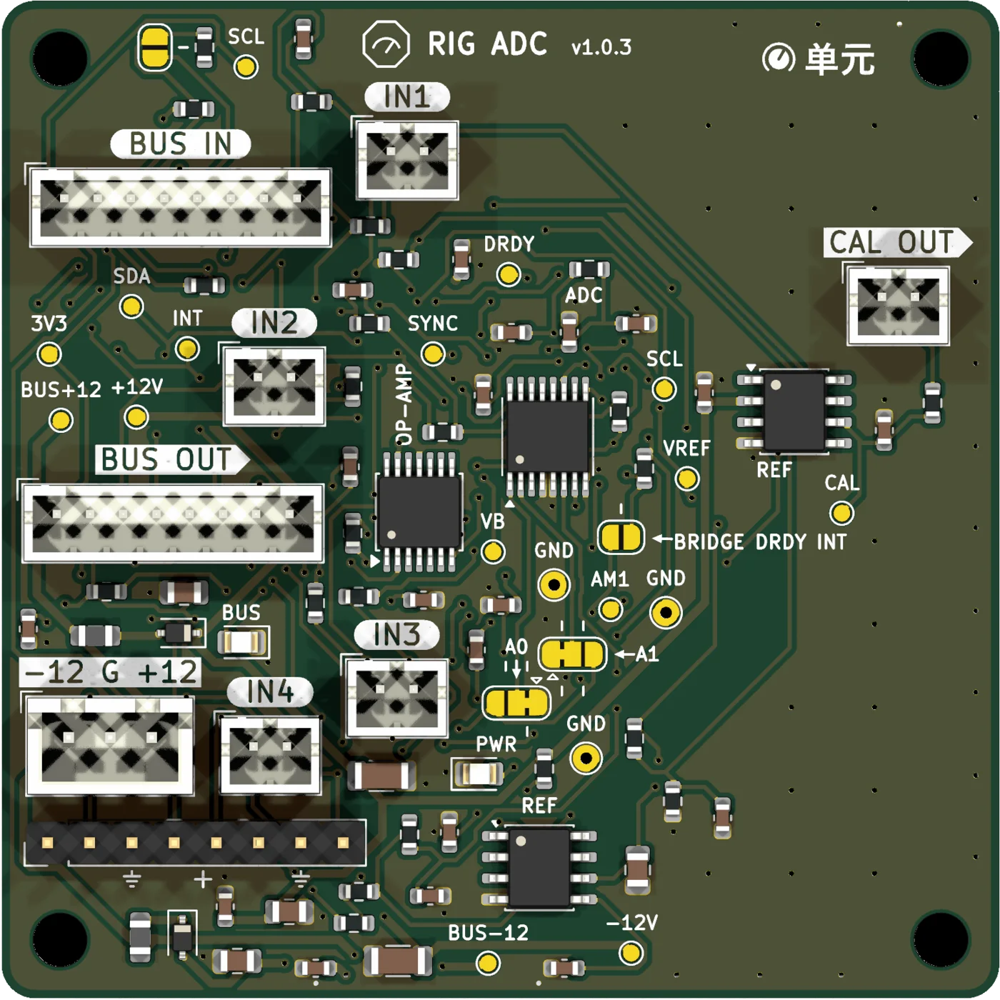
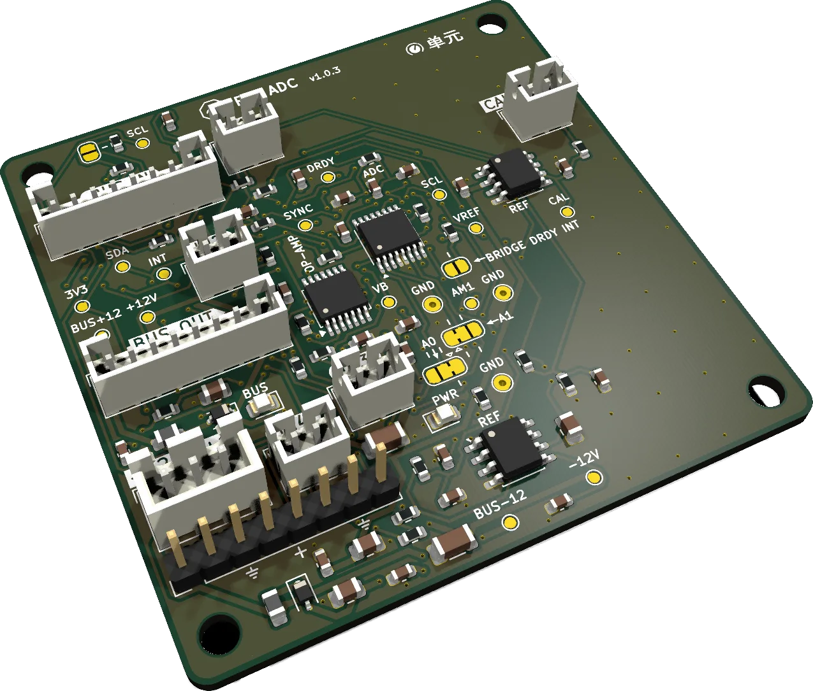
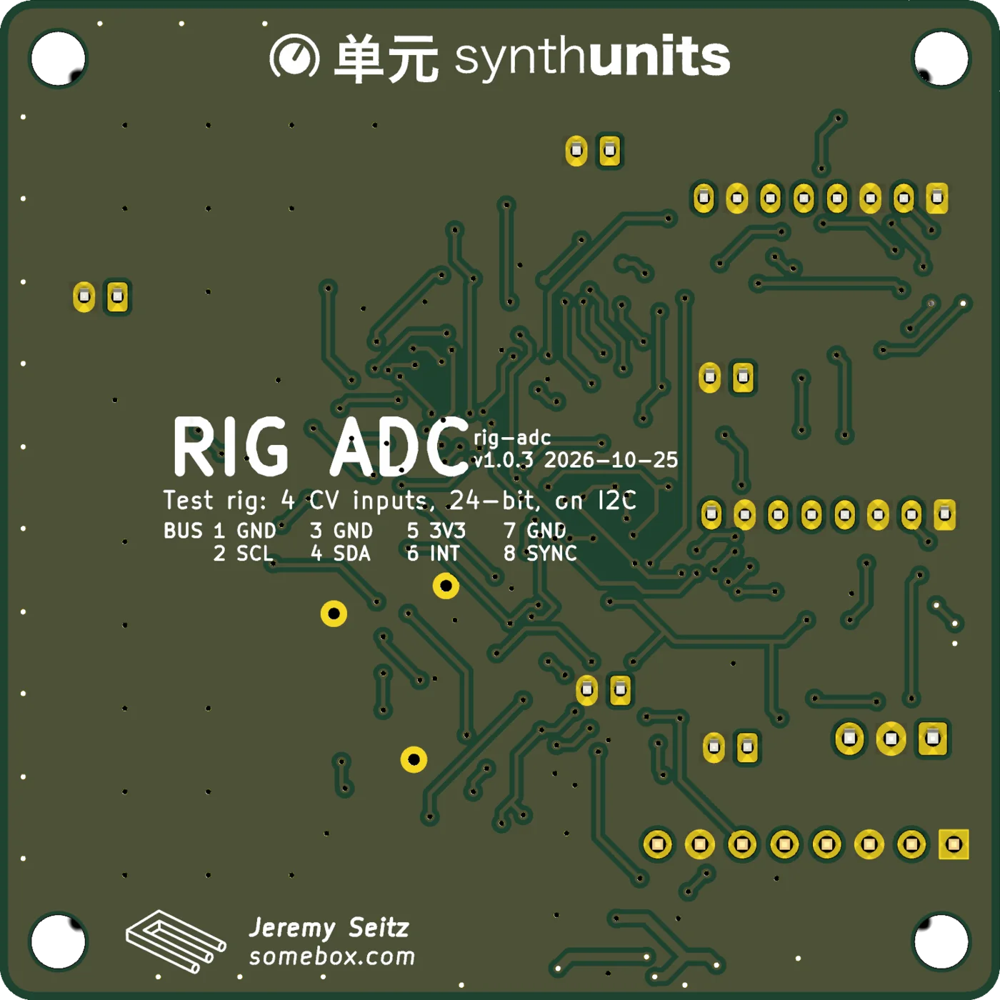

Rig: 4 CV inputs
The test rig's voltmeter: four 24-bit CV inputs at 1 MΩ, with ground sense and a 5.000 V reference to calibrate against.
The test rig's voltmeter. It reads four CVs with a 24-bit ADC over I2C: each pitch CV as it is applied to a module, a module's DC levels, its test pads. With a 5.000 V precision reference on the board it calibrates itself, and through itself the rig's CV outputs and the ES-8's inputs and outputs. The aim is pitch measurements well under a cent per octave, which my portable meters can't give.
Each input goes through an inverting op-amp stage with 1 MΩ in: the usual Eurorack CV input stage, as in Mutable Instruments' modules, redrawn. ±12.5 V maps onto the ADC's range, and anything beyond that only saturates the op-amp, so there are no clamps. At 1 MΩ, a module's 1 kΩ output reads only 0.1 % low. Input 4 can be a ground-sense lead to the module, so the other three are measured against the module's own ground rather than the rig's.
To calibrate an input, a lead from CAL OUT gives it one point and a shorting plug the other. Like the other rig boards, it is deferred until the first modules are proven. Not built.
- Status
- Drawn and checked; held back from the first order
- Version
- v1.0.3 (2026-10-25)
- Board
- 60 × 60 mm, 2 layers



Block diagram
Drawn by the site's generator from the board's own data: its blocks, its connectors and the links between them. The pots and switches are listed in the block they set.
What it does
- Four inputs, 24-bit, 1 MΩ input impedance.
- ±12.5 V full scale; safe at ±12 V and beyond.
- Designed for about 50 µV rms of noise at the jack at 20 samples a second, about 0.06 cent.
- Designed for under a cent per octave after calibration.
- Ground sense: inputs 1 to 3 measured against input 4.
- CAL OUT: 5.000 V ±0.02 %, 2 ppm/°C, through 4.7 kΩ.
- One 2.5 V precision reference for the ADC and the input stages' offset; 0.1 % thin-film resistors from one series.
- Power: ±12 V on a 3-pin JST XH. The I2C side runs from the bus's 3.3 V.
- Addresses 0x40, 0x41, 0x44 or 0x45.
- 60 × 60 mm, two layers.
Connections
| Connector | Wire to | Housing | Pins |
|---|---|---|---|
| POWER (1 -12V, 2 GND, 3 +12V) | a the power board output (straight-through JST XH lead) | JST XH, 3 pins, top entry | 1 −12 V, 2 GND, 3 +12 V |
| BUS IN | the controller, or the next rig board (a straight 8-pin PH lead) | JST PH, 8 pins, top entry | 1 GND, 2 SCL, 3 GND, 4 SDA, 5 +3V3, 6 INT, 7 GND, 8 SYNC |
| BUS OUT | the controller, or the next rig board (a straight 8-pin PH lead) | JST PH, 8 pins, top entry | 1 GND, 2 SCL, 3 GND, 4 SDA, 5 +3V3, 6 INT, 7 GND, 8 SYNC |
| IN1 | a module's output or test pad; IN4 also a ground-sense lead to the module's GND | JST PH, 2 pins, top entry | 1 tip, 2 GND |
| IN2 | a module's output or test pad; IN4 also a ground-sense lead to the module's GND | JST PH, 2 pins, top entry | 1 tip, 2 GND |
| IN3 | a module's output or test pad; IN4 also a ground-sense lead to the module's GND | JST PH, 2 pins, top entry | 1 tip, 2 GND |
| IN4 (GND SENSE) | a module's output or test pad; IN4 also a ground-sense lead to the module's GND | JST PH, 2 pins, top entry | 1 tip, 2 GND |
| CAL OUT | an IN connector, to calibrate it (with a shorting plug for zero) | JST PH, 2 pins, top entry | 1 5.000 V, 2 GND |
Every panel control has its own connector with a fixed pinout, so any lead of the right size fits any module. Pin 1 is the square pad.
LEDs
On the board: PWR (green), BUS (green).
Wiring and setup
- Power from one of the power hub's outputs on a 3-pin JST XH lead, plugged in before the supply is switched on.
- The rig bus: BUS IN and BUS OUT, 8-pin JST PH, wired straight through.
- IN1 to IN3: 2-pin JST PH (1 tip, 2 GND), to a module's input connector on a Y-lead with the CV, to an output, or to a probe for the test pads.
- IN4 (GND SENSE): a lead to the module's ground pad. When it isn't sensing, leave a 2-pin shorting plug on it.
- CAL OUT (1 5.000 V, 2 GND): a lead into an input for its upper point, and a shorting plug on that input for zero.
- Address jumpers A0 and A1, each GND or 3.3 V (both GND: 0x40, as built).
- A jumper can put the ADC's data-ready signal on the bus's INT line; it is open as built, and the controller polls.
- Bridge the PULL-UP jumper on one board of the chain only.
Limits and open questions
- Not built or measured; deferred until the first modules are proven.
- The ADC's power-on settings are wrong for this board until the firmware sets them: with its gain stage on, inputs above about +10.5 V read wrong.
- CAL OUT drops 18.07 mV across its 4.7 kΩ into an input, and the host subtracts it. The resistor is there so a shorting plug or a slip onto a rail can't damage the reference.
- The input stages' summing nodes run close to +12 V copper, so humidity could drift the zero: wash the boards, and check the drift on the bench.
- The 1 MΩ input loads very high-impedance points, such as an envelope's timing capacitor: read those before or after the signal tests.
- Plugging a lead into a live, stiff bench supply can overshoot the rail close to the reference's rating. Power it from the power hub and plug in first. A later version adds a filter ahead of the reference.
- The ES-8's input impedance isn't published, so its recordings read slightly low until I measure it once.
Development notes
- To the Pico 2 it is an I2C peripheral at 0x40. The host asks with READ (an input, averaged over n readings, at a chosen rate) and gets volts back.
- The firmware first sets the ADC to the external reference and bypasses its gain stage, then for each reading selects the input and starts one conversion.
- The review before the first order had me raise CAL OUT's resistor from 47 Ω to 4.7 kΩ: a shorting plug drew 106 mA from a reference rated for 10 mA.
- Calibration coefficients live on the host, one file per rig board and one for the ES-8, keyed by serial. Results and plots from each run are kept; the raw recordings aren't.
Schematic
The schematic as drawn, with each chip named by its function rather than its part number. The design isn't open source yet, so there are no files to download.


Would you use a RIG ADC? A thumbs-up on its tracking issue is how I count interest, and you can subscribe there to follow its bring-up. Questions and ideas go to the discussions.